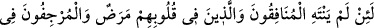
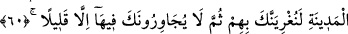
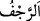
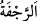
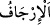
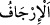
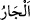
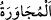

olan cehennemden Allâh’a sığınırız.
60. Andolsun iki yüzlüler ile kalplerinde hastalık bulunanlar (fuhuş düşüncesi
taşıyanlar) ve şehirde kötü haber yayanlar (bu hallerinden) vazgeçmezlerse, seni
onlara mûsallat ederiz (onlarla savaşmanı ve onları şehirden sürüp çıkarmanı sana
emrederiz); sonra orada, senin yanında ancak az bir zaman kalabilirler.
“Andolsun,” Allâh’a yemin olsun ki “iki yüzlüler,” münâfıklar içinde bulundukları
nifaktan ve başkalarına eziyet vermeyi gerektiren nifâkın hükümlerinden, “kalplerinde
hastalık bulunanlar” îman zâfiyeti, îmanda sebatın azlığı, dinde kararsızlıklarından
dolayı fücûr ve onun peşinden gelen hayırsız işlerde bulunanlar; ya da fücurlarından,
zinâ ve hayasızlıklara meyillerinden dolayı kalplerinde hastalık olanlar, “şehirde kötü
haber” yalan haberler “yayanlar” bu hallerinden “vazgeçmezlerse,” imtinâ
etmezlerse; yâni bu iki gruptan yalan haberleri yayanlar, “Hezimete uğradılar,
öldürüldüler, yakalandılar, başlarına şunlar şunlar geldi, düşmanınız geldi” ve benzeri
müslümanlara eziyet verip kalblerine şüphe, kırıklık ve korku düşüren uydurma/yalan
sözler söyleyerek müslümanların seriyyeleri hakkında kötü haberleri yaymaya son
vermezlerse…
“
” şiddetli sarsıntı, “
” zelzele/deprem, “
” ise sözle veya fiille
sarsmak ve sallamak demektir. Yalan haber vermek, sâbit değil değişken ve istikrarsız
olduğu için “
” diye vasfedilmiştir. et-Tâc’da “
” yalan ve asılsız haber
çıkarmaktır, der.
“Seni onlara” münâfıklara, kalplerinde hastalık olanlara ve kötü haber yayanlara
“musallat ederiz” sana kesin olarak onlarla savaşmanı, onları şehirden sürüp
çıkarmanı, onları sürgüne mecbur bırakacak şeyleri sana emrederiz, seni buna teşvik
ederiz. Her zaman seni onlara karşı görevlendirir, musallat ederiz ve onları öldürmeni
emrederiz. “Sonra orada, senin yanında ancak” vazgeçip geçmedikleri belli olacak
kadar “az bir zaman” Bahru’l-ulûm’da denildiği üzere bizzat kendileri ve âileleri
çekip gidene kadar “kalabilirler.” Yâni, artık seninle beraber ancak bu kadar
oturabilirler.
“ (sonra)” kelimesi onların Medîne’den sürgün edilip Hz. Peygamber (s.a.)’in
civarından ayrılmalarının onlar için en büyük musîbet olduğuna delâlet etmektedir. “
(komşu)”, mesken ev ve ikameti sana yakın olandır. “
” ise birisiyle komşuluk
etmek demektir.